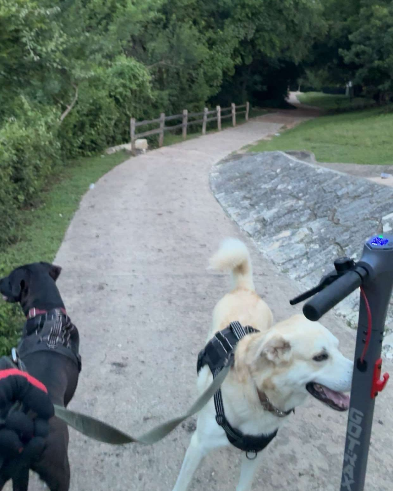
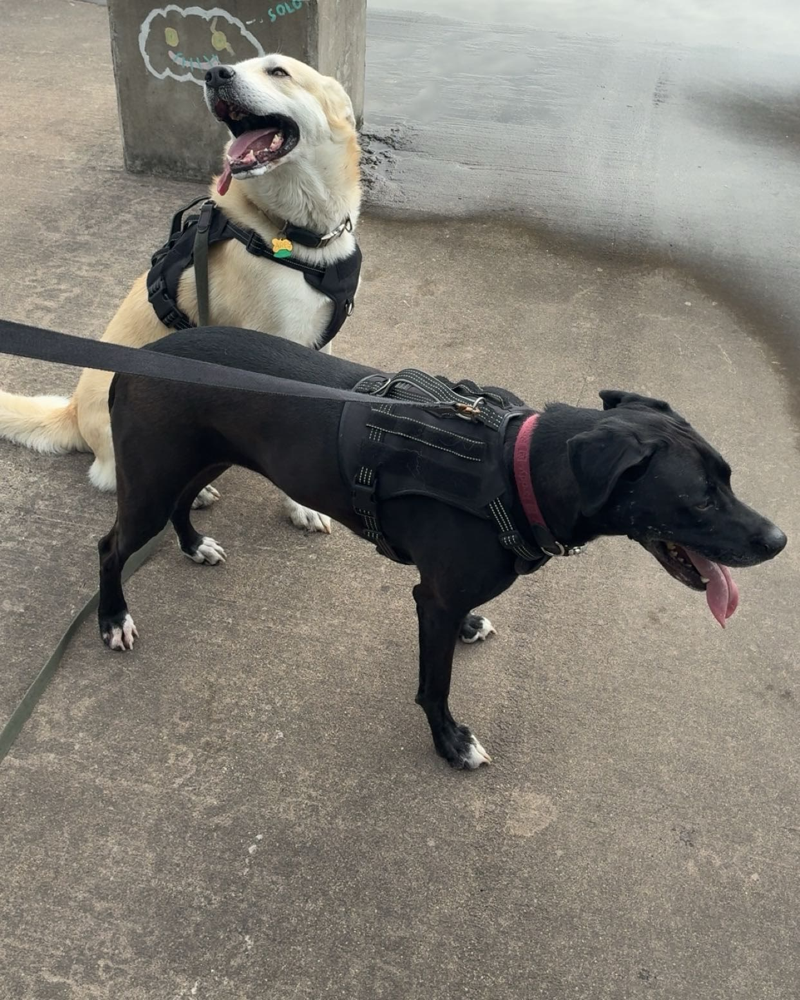

Guide
Practical notes
General notes for dryland mushing, city outings, and e-scooter mushing in Austin, Texas. Local rules and a dog's health come first.

Getting started with dryland mushing
Dryland mushing is pulling without snow. A dog in a pulling harness draws a person along on foot, on a bicycle, or on a scooter.
A calm beginning is a short, straight path. The dog learns to lean into the harness. The person learns to steer, to stop, and to keep the line clear of paws and wheels.
It is wise to ask a veterinarian before regular pulling, and to wait until a young dog has finished growing. Early sessions stay brief.
The pull belongs on a harness fitted to the chest and shoulders.
Urban mushing safety
City paths are shared. A musher yields to people on foot, keeps a speed that can stop in the space ahead, and leaves room to pass.
Posted signs and private property set the boundary. A closed path is a path to leave.
After dark, a light and reflective gear help others see the team. Lines stay short near curbs, glass, and traffic.
E-scooter mushing
E-scooter mushing, also called scooterjoring, pairs a dog in a pulling harness with a person on a kick scooter. In this community it is daily practice: two dogs and an electric kick scooter.
The motor helps the person stay with the dogs, ease a hill, or roll while the dogs walk. The dogs set the pace.
A few choices keep the setup steady:
- A pulling harness
- A line with a little give, so a surge stays soft at both ends
- A waist belt, or another hitch that leaves the handlebars free to steer
- Brakes in good order, a stable deck, and a light for darker hours
- Closed shoes, and a helmet as a sensible choice
The first rides belong on a flat, quiet path. Stops come before speed. The outing ends while the dogs are still glad to be out.
Heat and paw care in Texas
Warm months in Austin call for early mornings and late evenings.
Pavement holds heat. A surface that is uncomfortable under a bare hand is a poor surface for paws. Shade, grass, or a cooler hour is kinder.
The dog's manner is the guide. Heavy panting, a slower step, a search for shade, or a loss of interest is a reason to stop, offer water, and rest. Booties and a simple paw balm can help on rough ground. Booties are easier when a dog has already worn them for a few quiet minutes at home.
A veterinarian can speak to what a particular dog can handle in the heat.
Basic commands and training
A few words, used the same way each time, are enough. Common mushing cues include:
- Hike
- Move forward.
- Whoa
- Stop.
- Gee
- Turn right.
- Haw
- Turn left.
- Easy
- Slow down.
- On by
- Pass a distraction and continue.
These cues are learned on foot, with a loose line and a harness, before a scooter is added. Praise marks the pull forward. Stops are practiced more often than starts. Sessions stay short so the work remains clear.
On a scooter or a bicycle, the person steers too. The words still tell the dog what the moment is for.
Harnesses and gear
A pulling harness carries the work on the chest and shoulders and leaves the neck free. An X-back, or a similar sled-style harness, is a common choice. A collar holds tags. The harness holds the pull.
Fit is quiet when it is right: the dog can breathe, the straps lie smooth, and the pull comes from the chest. For two dogs, a gangline keeps the pair together, and a towline runs back to the person. A short bungee section softens the starts.
The rest is simple: reflective strips or a small light, water, a way to rinse paws, gloves, and a waist belt for scooter or bicycle outings.

These notes are general information. A veterinarian is the authority on a dog's health, and posted local rules govern where a team may go.